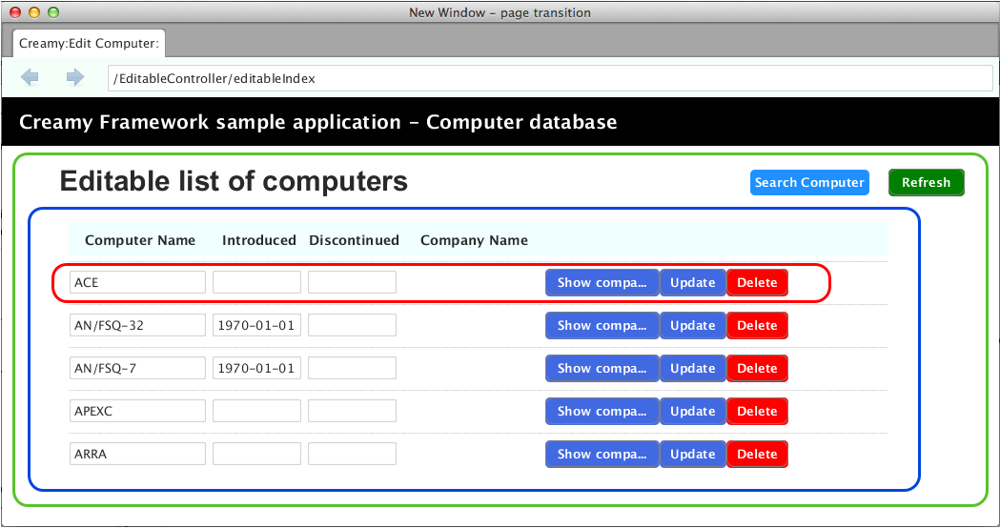

FXMLは、複数のFXMLファイルで１つの画面を定義することができます。
Creamyフレームワークはこの仕組みを拡張して、画面の一部をテンプレート化(部品化)することが可能です。 このテンプレート化を実現するために、renderマクロ使います。 renderマクロは、Velocityマクロによるインターフェースです。
親のFXMLで定義したデータを、子のFXML（部分テンプレート）に受け渡しできます。 受け渡されたデータは、部分テンプレート内で親と同一の変数名でアクセス可能ですので、複数FXMLファイルをシームレスに扱うことができます。
Velocityマクロによって以下3種類のAPIを用意しています。
1. 指定されたFXMLをパラメータなしでレンダリング
render(<FXML名>)
2. 指定されたFXMLをパラメータありでレンダリング。
単一パラメータを受け渡すケースです。
renderWithVriable(<FXML名>, <パラメータ名(Key)>, <データ(Value)>)
3. 指定されたFXMLをパラメータありでレンダリング
複数のパラメータを受け渡すケースです。パラメータ、データはそれぞれリスト([ ])で指定します。
renderWithVriables(<FXML名>, [<パラメータ名(Key)>], [<データ(Value)>])
次の図は、部分テンプレートを使った例です。
実行例
赤枠で囲んだところで部分テンプレートを使っています。同じフォーマットの行が５行ありますが、１つのテンプレートを繰り返し処理を使って記述しています。
では、上の実行例の記述箇所を見ていきます。まずは緑枠の部分です。
記述例 - EditableIndex.vm.fxml
1 2 3 4 5 | <AnchorPane fx:id="listArea" prefHeight="-1.0" prefWidth="-1.0" >
<children>
<!--% #render("EditableList") -->
</children>
</AnchorPane>
|
3行目で #renderマクロを使っています。EditableIndex.vm.fxmlのこの部分に、EditableList.vm.fxmlファイルの要素を取り込んでいます。
次は、実行例の青枠のリスト部分です。
記述例 - EditableList.vm.fxml
1 2 3 4 5 6 7 8 9 | <VBox fx:id="listPane" prefHeight="500.0" prefWidth="860.0" >
<children>
<!--%
#foreach($computer in $computers)
#renderWithParam("EditableItem", "computer", $computer)
#end
-->
</children>
</VBox>
|
4〜6行目が繰り返し処理で、Velocityの構文で記述しています。
5行目で #renderマクロを使ってEditableItemの要素を取り込んでいます。これが、実行例の赤枠部分にあたります。
#renderWithParam の第二引数 “computer” が変数名、第三引数 $computerがその値です。親FXML(EditableList)が、子FXML(EditableItem)に渡すデータです。
18、22行目は、テンプレートマクロのためのCreamy独自の記述方法です。Creamy独自の記述方法の説明 に解説がありますので、そちらも参考にして下さい。
最後に赤枠の部分です。TextFieldの部分を例に挙げます。
記述例 - EditableItem.vm.fxml
1 2 3 | <TextField fx:id="computerName" text="$!computer.getName()"/>
<TextField fx:id="introduced" text="$formatter.formatWithSpace($computer.getIntroduced())" />
<TextField fx:id="discontinued" text="$formatter.formatWithSpace($computer.getDiscontinued())" />
|
TextField要素のtext属性値に使っているのが、#renderWithParam の第三引数 $computerです。コンピュータデータの１件分にあたります。